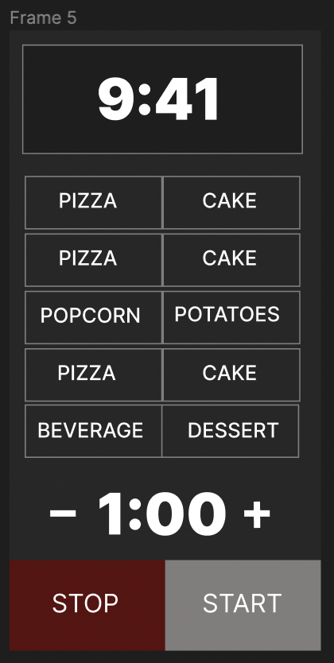
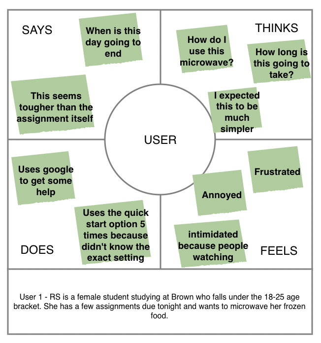
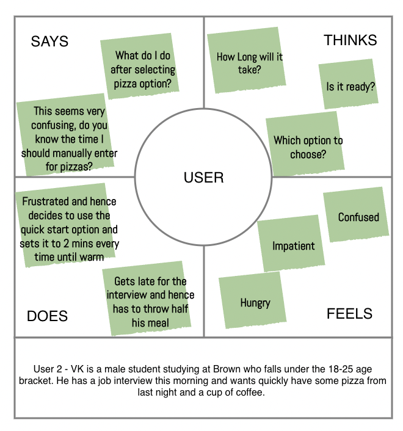
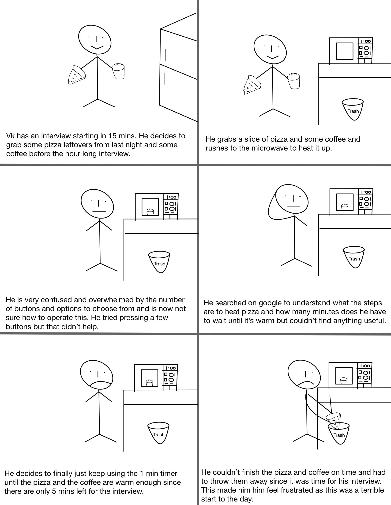
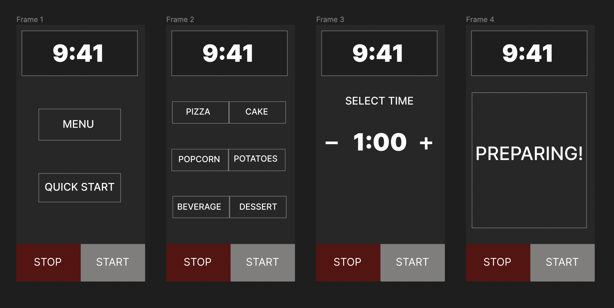

1. Select an accessible interface: Microwave
2. Prepare some questions for users regarding their experiences with the interface:
Some of the questions that I decided to ask were as follows:
- Do you mostly use microwave at work or at home?
- Which age group do you fall under?
- How many times a week do you use microwave?
- Which microwave setting do you use mostly?
- Have you tried using all the functionalities of your microwave at least once?
- Do you find the interface overwhelming?
- On a scale of 10, how easy is it to use and operate all the functions of your microwave?
3. Create a sketch and write a brief description of the interface:

This is a microwave interface. The top section is the timer which by default shows the current time and changes as we start using the different functionalities of the microwave. After that are a bunch of menu options that we can choose from. And finally, we have the quick start option where the user can manually set the timer as per requirement. This is followed by two buttons, one to start the operation and the other to end the operation. In the image above, there are a smaller range of buttons and options shown than it is traditionally found. Users typically feel overwhelmed with the amount of options presented and lack of instructions and hence most people simply opt for the quick start option.
1. Write a few sentences or bullets describing the key observations you gained from observing your users: Users have generally avoided using the existing menu options found in microwaves due to their intricate layout. Users hence just use the quick start timer option mostly and set the time manually by searching online to prepare food. Users overall agreed that the current interface isn’t the most user-friendly interface and would like a simpler version.
2. List your questions in a numbered list and summarize the responses of your interviewed users using up to 5 bullet points:
- How many times a week do you use microwave?
Almost everyday, Everyday, Everyday
- Which microwave setting do you use mostly?
Quickstart, Quickstart, Quickstar/Popcorn
- Have you tried using all the functionalities of your microwave at least once?
No, No, Yes
- Do you find the interface overwhelming?
Yes, Yes, Yes
- On a scale of 10, how easy is it to use and operate all the functions of your microwave?
5, 5, 7
Construct 2 personas by creating a four-quadrant empathy map, describing what users think, feel, say, and do:


Storyboard your persona’s user journey from start to end. The entire user journey should be depicted. Under each frame, write a caption of what’s happening: This storyboard is for User 2 - VK

I decided to redesign the existing interface after understanding the problems that users face. The solution I came up with is as follows:

The existing interfaces on most microwaves are very overwhelming and often users do not know how to operate maximum functions of such microwaves. The redesigned version gets rid of all these buttons that are usually found. Instead there are two options for the user to choose from. If the user selects ‘menu’, then frame 2 pops up with all the functionalities to choose from after which it takes the user to frame three where the required settings are already loaded, and the user just has to press the start button. If the user opts for quick start from frame 1, then the user is directly taken to frame 3 where the user can adjust the time manually and then start.